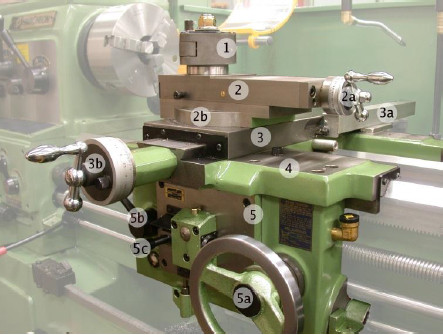
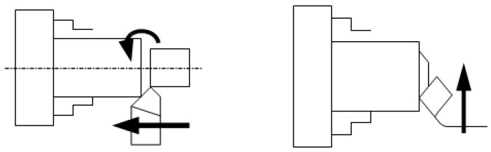

4. Eretan (carriage/support)
Activity

http://upload.wikimedia.org/wikipedia/commons/1/13/HwacheonCentreLathe-carriage-mask_legend.jpg
Gambar 16 Eretan
Keterangan gambar
1. Rumah pahat
2. Eretan atas; 2a handle eretan atas; 2b baut pengikat eretan atas
3. Eretan melintang;3a luncuran eretan melintang; 3b handle eretan melintang
4. Pendukung eretan
5. Transmisi eretan memanjang;5a Handle eretan memanjang;5b handle otomatis; 5c handle otomatis ulir
Eretan adalah bagian mesin bubut yang berfungsi sebagai penghantar pahat bubut sepanjang alas mesin. Eretan terdiri dari tiga jenis, yaitu:
- Gerakan berputar, yaitu bentuk gerakan rotasi dari benda kerja yang digerakan pada pahat dan dinamakan gerak potong.
- Gerakan memanjang, yaitu bentuk gerakan apabila arah pemotongannya sejajar dengan sumbu kerja. Gerakan ini disebut juga dengan gerakan pemakanan.
- Gerakan melintang, yaitu bentuk gerakan apabila arah pemotongan tegak lurus terhadap sumbu kerja. Gerakan ini disebut dengan gerakan melintang atau pemotongan permukaan.

Gambar 17 Ilustrasi Penyayatan
Pemakanan ialah jarak untuk satuan mm, yang ditempuh oleh pahat bubut dalam satu putaran benda kerja dalam arah memanjang atau melintang. Kotak kunci dihubungkan dengan kuat pada eretan perkakas.